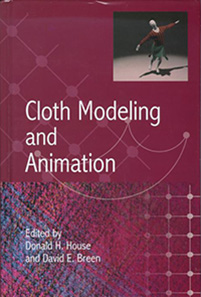

Donald H. House
Research
My research has ranged across many aspects of the fields of computer graphics and visual perception. My Ph.D. study focused on constructing computational models of brain mechanisms for visuomotor coordination. I quickly realized that one of the best ways to understand how my models were working was to create visualizations of their activity, and this led me to the fascinating field of computer graphics.
Within graphics, my favorite area was the application of physics to animation and modeling, a discipline that was just beginning to blossom as I entered the field in 1985. I had some early success working on models of the draping behavior of cloth.
Later in my research career I came full circle and became interested in the perceptual optimization of visualizations -- i.e. how visualizations can be designed to maximize the ability of the viewer to understand the important aspects of the objects, processes, or phenomena being displayed. Nothing new here, illustrators have been perfecting these ideas for centuries -- but providing emperical evidence for the efficacy of design choices, and doing this within a computational context is new and exciting.
As part of the perceptual work, we have been looking at three particular areas of interest: texturing of layered surfaces to optimally reveal shape, visualizing predictions made under uncertainty by direct display of a carefully chosen subset of an ensemble of predicted outcomes, and 3D eyetracking enabling us to understand where a user is looking in space under stereo viewing.
Books

 I have worked on three book projects during my career.
I have worked on three book projects during my career.
Foundations of Physically Based Modeling and Animation
is the latest (2016), coauthored with John Keyser.
It provides an introduction to the field, meant to bring the reader to the point where
they can access the extensive research literature.
Cloth Modeling and Animation,
coedited with David Breen, covers the state of that art circa 2000. Some
of the later technical chapters are long since outdated. However,
the early chapters are more timeless, covering the very different
structures of woven and knit cloth, and
their implications for modeling and simulation.
Depth Perception in Frogs and Toads is a 1989 monograph coming from my Ph.D. research.
It contains an interesting model of how binocular depth cues may couple with
monocular depth cues from lens accommodation (i.e. focus) to disambiguate depth estimation
for prey catching.
Recent Papers
2016L. Liu, A. P. Boone, I. T. Ruginski, L. M. Padilla, M. Hegarty, S. H. Creem-Regehr, W. B. Thompson, C. Yuksel, and D. H. House. Uncertainty visualization by representative sampling from prediction ensembles. IEEE Transactions on Visualization and Computer Graphics, to appear.
E. Akleman, and D. House, Barycentric Shaders: Art Directed Rendering and Shading Using Control Images, Proceedings of Expresive '16, pp 39-49, 2016.
I. T. Ruginski, A. P. Boone, L. M. Padilla, L. Liu, N. Heydari, H. S. Kramer, M. Hegarty, W. B. Thompson, D. H. House, and S. H. Creem-Regehr. Non-expert interpretations of hurricane forecast uncertainty visualizations. Spatial Cognition and Computation, 16(2):154-172, 2016.
2015
Ergun Akleman, Siran Liu, and Donald House. Art directed rendering & shading using control images. In SIGGRAPH 2015: Studio (SIGGRAPH '15). ACM, New York, NY, USA, Article 10, 1 page, 2015.
L.Liu, M. Mirzargar, R. Kirby, R. Whitaker, and D. House. Visualizing time-specific hurricane predictions, with uncertainty, from storm path ensembles. Computer Graphics Forum (Proceedings of EUROVIS Ã15), 34(3):371-380, 2015.
2014
Duchowski, A. T., House, D. H., Gestring, J., Congdon, R., Świrski, L., Dodgson, N. A., Krejtz K., Krejtz, I., Comparing Estimated Gaze Depth in Virtual and Physical Environments, Eye Tracking Research & Applications (ETRA), March 26-28, 2014.
Wang, R. I., Pelfrey, B., Duchowski, A. T., and House, D. H., Online 3D Gaze Localization on Stereoscopic Displays, Transactions on Applied Perception, 11(1), 2014.
2013
D. House, J. Cox, and M. K. Lindell, Visualizing uncertainty in predicted hurricane tracks, International Journal for Uncertainty Quantification, vol 3, no. 2, pp. 143-156, 2013.
2012
Wang, R. I., Pelfrey, B., Duchowski, A. T., and House, D. H., Online Gaze Disparity via Binocular Eye Tracking on Stereoscopic Displays, in Proceedings of the Second Joint 3DIM/3DPVT Conference: 3D Imaging, Modeling, Processing, Visualization & Transmission (3DimPVT 2012), October 13-15, 2012, Zurich, Switzerland, IEEE.
Meng Zhu, Mark Carlson, Donald House, Ray Casting Sparse Level Sets, DigiPro 2012 Conference Proceedings, August 4, 2012, Los Angeles.
Duchowski, A. T., Pelfrey, B., House, D. H., and Wang, R., Eye-Tracked Vergence Response During Active-Stereo Display, Hamlyn Symposium on Medical Robotics, July 1-2, 2012, London, UK.
A. Bangalore and D. House, A Technique for Art Direction of Physically Based Fire Simulation, Proceedings of Computational Aesthetics 2012, June 4-6, 2012, Annecy, France.
2011
Andrew T. Duchowski, Brandon Pelfrey, Donald H. House, Rui Wang, Measuring Gaze Depth with an Eye Tracker During Stereoscopic Display, Proceedings of the Symposium on Applied Perception in Graphics and Visualization, August 2011, Toulouse, France.
T. A. Davis and D. H. House, The Art and Science of Digital Production Arts, Eurographics 2011 - Education Papers, Llandudno, UK, pp. 17-22, 2011.
2010
C. Yuksel, J. Keyser, and D. House, Mesh Colors, ACM Transactions on Graphics (Presented at SIGGRAPH 2010), 29(2), Article 15, 2010.
D. House, B. Malloy and C. Buckley, The Craft of Computer Programming: Lifting the Veil, Proceedings of Future Play 2010, pp. 98-105, 2010.
B. Daugherty, A. Duchowski, D. House, C. Ramasamy, Measuring Vergence Over Steroscopic Video with a Remote Eye Tracker, Proceedings of the 2010 Symposium on Eye-Tracking Research & Applications, pp. 97-100, 2010.
2009
M. Singh, C. Yuksel, D. House, Fast Occlusion Sweeping, Advances in Visual Computing (Proceedings of International Symposium on Visual Computing 2009), Lecture Notes in Computer Science, Springer, vol. 5875, pp. 167-178, 2009.
A. Bair, D. House, C. Ware, Factors influencing the choice of projection textures for displaying layered surfaces, Proceedings of Applied Perception in Graphics and Visualization 2009, pp. 101-108, 2009.
C. Ramasamy, D. House, A. Duchowski, B. Daugherty, Using eye tracking to analyze stereoscopic filmmaking, SIGGRAPH 2009: Posters, Article No. 28, 2009.
2008
W. Hong, D. House and J. Keyser. Adaptive Particles for Incompressible Fluid Simulation, The Visual Computer (Proceedings of Computer Graphics International 2008), 24(7-9), pp. 535-543, 2008.
2007
M. Singh and D. House, Line Drawing as a Dynamic Process, Proceedings of Pacific Graphics 2007, pp. 351-360, 2007.
C. Yuksel, D. House and J. Keyser, Wave Particles, ACM Transactions on Graphics (Proceedings of SIGGRAPH 2007), 26(3), article 99, 2007.
J. Stoddard, R.D. Bergeron and D. House, Tangent Driven Interpolative Subdivision, Computers and Graphics, 31(5), pp. 737-749, 2007.
A. Bair and D. House. Grid With a View: Optimal Texturing for Perception of Layered Surface Shape, IEEE Transactions on Visualization and Computer Graphics (Proceedings of Visualization 2007), pp. 1656-1663, Nov. 2007.
2006
A. Bair, D. House and C. Ware. Texturing of Layered Surfaces for Optimal Viewing, IEEE Transactions on Visualization and Computer Graphics (Proceedings of Visualization 2006), pp. 1125-1132, Sept. 2006.
D. House, A. Bair and C. Ware. An Approach to the Perceptual Optimization of Complex Visualizations IEEE TVCG, May 2006.
2005
D. House, A. Bair and C. Ware. On the Optimization of Visualizations of Complex Phenomena, IEEE Visualization, 2005.
A. Bair, D. House and C. Ware. Perceptually Optimizing Textures for Layered Surfaces, Applied Perception in Graphics and Visualization, 2005.
2004
S. Greenwood and D. House. Better with Bubbles: Enhancing the Visual Realism of Simulated Fluid, Symposium on Computer Animation, 2004.
2003
G. Schmidt, D. House. Model Based Motion Filtering for Improving Arm Gesture Recognition Performance, Gesture Workshop 03, (Genoa, Italy) (2003)
G. Greenfield, D. House. Image Recoloring Induced by Palette Color Associations, Journal of WSCG, Vol. 11, No. 1, 189-196 (2003)
Donald H. House